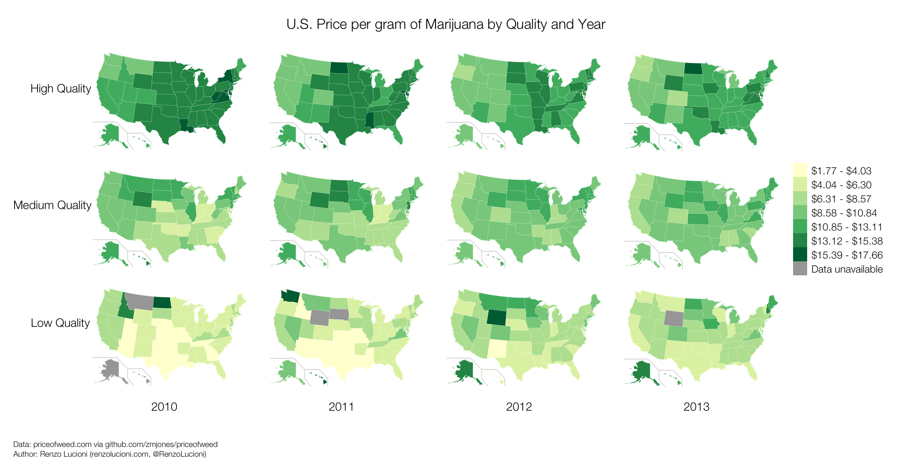

Week 4 | Mapping data 1
What does this map tell you?
Source: US Census
Let's normalize: http://bit.ly/bls-map
BREAK!
Basic map types
• categorical
• choropleth
• dot density
Categorical map
Choropleth map(s)
Dot density map

Now ubiquitous: pin map

Source: Yelp
Notes on using (and not abusing) color
Source: Penn State

Source: Princeton